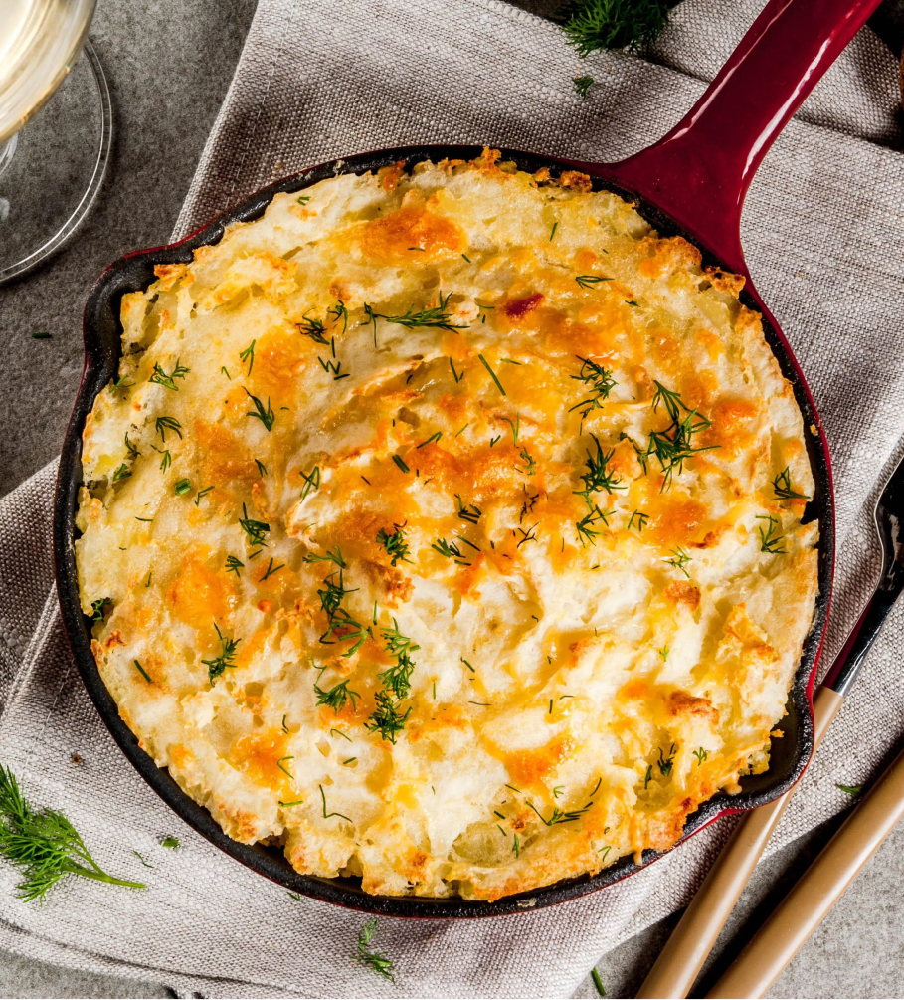

Картофельная запеканка с сыром
Рецепт:
- Картофель - 8-10 шт
- Мука - 4 ст. л.
- Сливочное масло - 4 ст. л.
- Молоко - 360 мл
- соль - по вкусу
- Молотый черный перец - по вкусу
- Сыр - 250 г
- немного растительного масла
Приготовление
- Опустите картошку в кипящую воду и варите 20–25 минут почти до готовности.
- В сотейнике растопите масло на среднем огне. Всыпьте муку и готовьте пару минут, помешивая венчиком. Влейте молоко и, помешивая, варите 2–3 минуты до загустения.
- Снимите соус с огня, добавьте соль, перец и 200 г тёртого сыра. Перемешайте до однородной консистенции.
- Очистите остывшую картошку и нарежьте тонкими кружочками. Выложите треть картофеля в форму, смазанную маслом. Приправьте солью и перцем и полейте частью сырного соуса. Таким же образом сделайте ещё два слоя. Посыпьте оставшимся тёртым сыром и выпекайте 20–25 минут при температуре 180 °C.